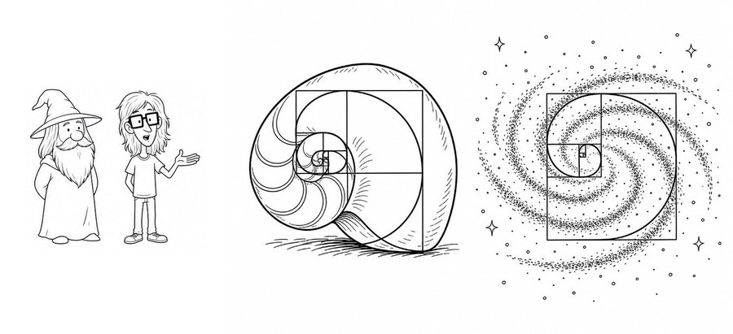
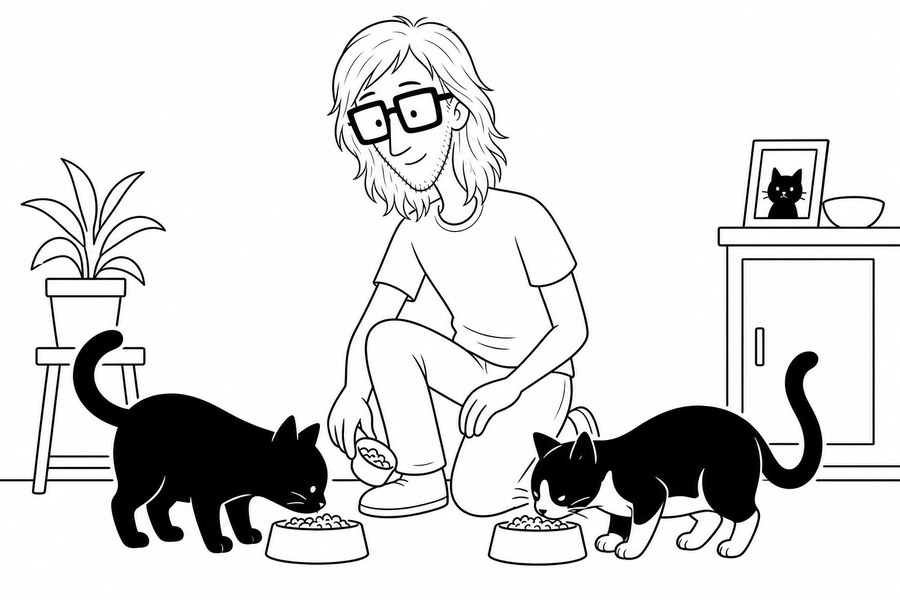

Illustrated throughout
Black-line artwork accompanies the story, giving each scene the feel of a hand-drawn fable.
A novel by WG Docent
An illustrated story about ordinary days that tilt toward the impossible — told with black-line wit, warm friendship, and real life struggles. There's also a couple of cats with very strong opinions.

WG Docent writes fiction at the intersection of the everyday and the uncanny — where a wizard might explain Fibonacci over breakfast, and a black cat may simply walk away, unimpressed.
Black-line artwork accompanies the story, giving each scene the feel of a hand-drawn fable.
Strange things happen quietly, as if wonder were just another household guest.
Silas, the Wizard, Wallace, Frank, and friends carry the story — grumpy, stubborn, and deeply human.
A few moments from the illustrated world of Silas and the Wizard.



